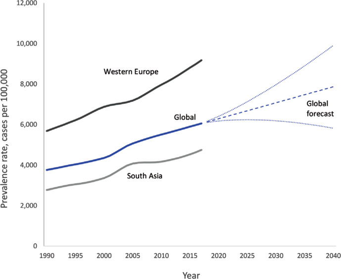
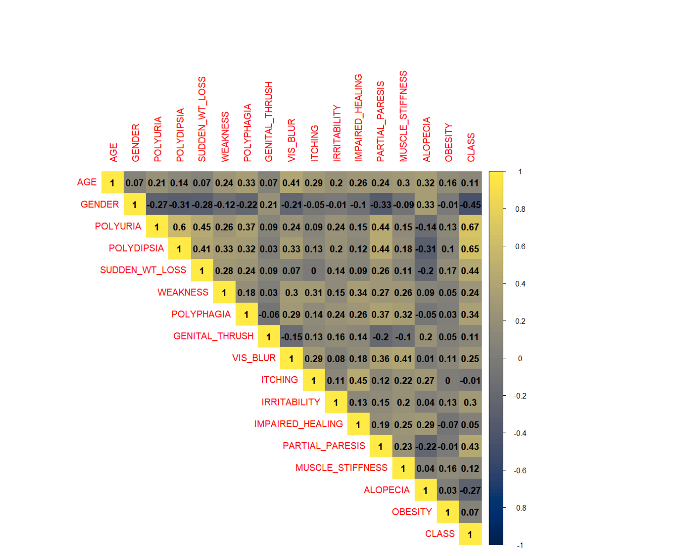

MSBI 33200 - Final Project
Preamble
Dataset Description
These data were collected using questionnaires approved by a physician from the patients of Sylhet Diabetes Hospital in Sylhet, Bangladesh (Islam, Ferdousi, Rahman, & Bushra, 2019).
Project Description
This project entails the development and elucidation of the best machine learning model that could potentially aid the more rapid detection of early-stage diabetes on the basis of patient-described symptoms. What will be demonstrated here can be thought of as the second step in a computer-aided diagnostic pipeline where the first was the use of Natural Language Processing (NLP) to extract key symptomatology from patient reports contained in clinical notes.
Background
Global Burden of T2DM
The incidence of Type 2 (non-insulin-dependent) diabetes (T2DM) has been increasing worldwide. According to the Global Burden of Disease Dataset, approximately 6.28% of the world’s population (~462 million individuals) were afflicted with T2DM. In 2017, the estimated prevalence of T2DM was 6059 per 100,000 cases. Over 1 million deaths annually can be attributed solely to T2DM making it the 9th leading cause of mortality. Incidence of T2DM is rising globally, and at a faster rate in developed regions. By 2030, the estimated prevalence is projected to be 7079 per 100,000. Early detection and treatment of T2DM will be critical to mitigate this increase (Khan et al., 2020).
Certain regions of the world, such as Pacific Ocean island nations, sustain the highest prevalence of disease. These countries include Fiji (20,277 per 100,000), Mauritius (18,545), American Samoa (18,312), and Kiribati (17,432). Southeast Asian countries, such as Indonesia, Malaysia, Thailand, and Vietnam, have moved up the ranks in the last two decades. Owing to their large population sizes, China (88.5 million individuals with type 2 diabetes), India (65.9 million), and the US (28.9 million) retain the top spots as the countries with the greatest total number of individuals with this condition (Islam et al., 2019).
Forecasted Prevalence of T2DM

(Islam et al., 2019)
Pathophysiology of T2DM - from UpToDate
“Type 2 diabetes is by far the most common type of diabetes in adults (>90 percent) and is characterized by hyperglycemia usually due to progressive loss of insulin secretion from the beta cell superimposed on a background of insulin resistance, resulting in relative insulin deficiency. The majority of patients are asymptomatic at presentation, with hyperglycemia noted on routine laboratory evaluation, prompting further testing. The frequency of symptomatic diabetes has been decreasing in parallel with improved efforts to diagnose diabetes earlier through screening.
The classic symptoms of hyperglycemia (including polyuria, polydipsia, nocturia, blurred vision, and weight loss) are often noted only in retrospect after a blood glucose value has been shown to be elevated. Polyuria occurs when the serum glucose concentration rises significantly above 180 mg/dL (10 mmol/L), exceeding the renal threshold for glucose reabsorption, which leads to increased urinary glucose excretion. Glycosuria causes osmotic diuresis (i.e., polyuria) and hypovolemia, which in turn can lead to polydipsia. Patients who replete their volume losses with concentrated sugar drinks, such as non-diet sodas, exacerbate their hyperglycemia and osmotic diuresis.
Rarely adults with type 2 diabetes can present with a hyperosmolar hyperglycemic state, characterized by marked hyperglycemia, severe dehydration, and obtundation, but without ketoacidosis. Diabetic ketoacidosis (DKA) as the presenting symptom of type 2 diabetes is also uncommon in adults but may occur under certain circumstances (usually severe infection or other acute illness)” (Inzucchi, 2022).
Rationale for Computer-Aided Prediction of Possible T2DM
Individuals with pre-diabetes lose approximately 4.3 years of potential life. Individuals with diabetes lose nearly 7.9 years of potential life. The years of potential life lost (YPLL) increases linearly with increasing disease severity and associated comorbidities (e.g. congestive heart failure, limb amputation, blindness) (Bloomgarden, 2021). In the United States, approximately 16 million adults have undiagnosed T2DM, and an estimated $327 billion dollars in economic productivity was lost in 2017 due to T2DM CDC (2021). It is therefore a worthwhile endeavor to speed up the early detection of this disorder and maintain normoglycemic states for as many individuals as possible.
The risks of a false positive diagnosis of T2DM may include psychological distress and unnecessary employment of medications. The risks of a false negative diagnosis of T2DM, however, include that of premature death. There is existing precedence for the use of machine learning models for early diagnosis of conditions (e.g. Chronic Myelogenous Leukemia - CML) (Hauser et al., 2021), so we aim to create a similar predictive model here.
Methods
- The data set used for creating the models is noted above.
- Exploratory data analysis (EDA) will be performed.
- Missingness
- Counts, Histograms
- Correlogram
- ML Algorithms - Naive
- Logistic Regression - considered the “go-to” method for binary classification problems, such as this one (Brownlee, 2020a). Application of L2 regularization by default.
- Gaussian Naive Bayes (Brownlee, 2020b)
- XGBoost - Also considered a good choice for this kind of problem and data set (Datacamp, n.d.). Training 100 trees (XGBoost Default).
- Tools
- R version 4.2.0
- Tidyverse
- data.table
- mltools
- rcompanion
- corrr
- reticulate
- Python version 3.9.12
- Scikit-learn
- Numpy
- Pandas
- R version 4.2.0
Exploratory Data Analysis
Missingness Visualization
Nothing is missing - complete dataset. No imputation required.
Age Histogram

Age appears to be normally distributed in this data set.
Gender Percentages

Gender also appears to be nearly equally distributed between Male and Female.
Positive vs. Negative Exemplars

The classes are not terribly imbalanced, so a method like SMOTE is not needed.
Eliza: Chi-Square Test
2x2 Contingency Table
`summarise()` has grouped output by 'Genital Thrush'. You can override using
the `.groups` argument.| Genital Thrush | No Pre-DM | Pre-DM |
|---|---|---|
| No | 167 | 237 |
| Yes | 33 | 83 |
| Total | 200 | 320 |
Hypotheses
\(H_{0}:\) There is no difference in the reports of genital thrush between those with early-stage diabetes and those without.
\(H_{a}:\) There is a difference in the reports of genital thrush between those with early-stage diabetes and those without.
Chi-Square Test
Pearson's Chi-squared test with Yates' continuity correction
data: diabetes$GENITAL_THRUSH and diabetes$CLASS
X-squared = 5.7921, df = 1, p-value = 0.0161Conclusion:
Reject the null and state that there is a difference in the reports of genital thrush between those with early-stage diabetes and those without early-stage diabetes.
Correlogram
REFERENCE FOR HOW THIS WAS BUILT

The above correlogram displays the effect size (calculated with Cramér’s V). This is a measure of the strength of association between variables in a chi-square test REFERENCE.
Spearman Correlation Plot

The above demonstrates that polyuria, polydipsia, polyphagia, and sudden weight loss are all moderately correlated with presence of early-stage diabetes.
Logistic Regression in R
Call:
glm(formula = CLASS ~ ., family = "binomial", data = diabetes %>%
mutate(across(where(is.character), as.factor)) %>% mutate(across(where(is.factor),
as.numeric)) %>% mutate(across(2:17, ~.x - 1)))
Deviance Residuals:
Min 1Q Median 3Q Max
-2.85636 -0.22769 0.00317 0.05440 2.77671
Coefficients:
Estimate Std. Error z value Pr(>|z|)
(Intercept) 2.74660 1.07547 2.554 0.010654 *
AGE -0.05117 0.02536 -2.017 0.043657 *
GENDER -4.35118 0.59819 -7.274 3.49e-13 ***
POLYURIA 4.43954 0.70527 6.295 3.08e-10 ***
POLYDIPSIA 5.07044 0.82887 6.117 9.52e-10 ***
SUDDEN_WT_LOSS 0.19033 0.54765 0.348 0.728193
WEAKNESS 0.81707 0.53680 1.522 0.127985
POLYPHAGIA 1.19377 0.53351 2.238 0.025250 *
GENITAL_THRUSH 1.86365 0.55331 3.368 0.000757 ***
VIS_BLUR 0.91587 0.65121 1.406 0.159600
ITCHING -2.80293 0.67268 -4.167 3.09e-05 ***
IRRITABILITY 2.34073 0.59053 3.964 7.38e-05 ***
IMPAIRED_HEALING -0.39163 0.55004 -0.712 0.476456
PARTIAL_PARESIS 1.15930 0.52482 2.209 0.027177 *
MUSCLE_STIFFNESS -0.72876 0.58020 -1.256 0.209101
ALOPECIA 0.15036 0.62008 0.242 0.808402
OBESITY -0.28904 0.54433 -0.531 0.595424
---
Signif. codes: 0 '***' 0.001 '**' 0.01 '*' 0.05 '.' 0.1 ' ' 1
(Dispersion parameter for binomial family taken to be 1)
Null deviance: 692.93 on 519 degrees of freedom
Residual deviance: 171.65 on 503 degrees of freedom
AIC: 205.65
Number of Fisher Scoring iterations: 8According to this logistic regression, the presence of polyuria, polydipsia, weight loss, genital thrush, itching, or irritability all increase the log odds of having early-stage diabetes.

Machine Learning in Python with R Data Preparation
| AGE | GENDER_Male | POLYURIA_Yes | POLYDIPSIA_Yes | SUDDEN_WT_LOSS_Yes | WEAKNESS_Yes | POLYPHAGIA_Yes | GENITAL_THRUSH_Yes | VIS_BLUR_Yes | ITCHING_Yes | IRRITABILITY_Yes | IMPAIRED_HEALING_Yes | PARTIAL_PARESIS_Yes | MUSCLE_STIFFNESS_Yes | ALOPECIA_Yes | OBESITY_Yes | CLASS_Positive |
|---|---|---|---|---|---|---|---|---|---|---|---|---|---|---|---|---|
| 40 | 1 | 0 | 1 | 0 | 1 | 0 | 0 | 0 | 1 | 0 | 1 | 0 | 1 | 1 | 1 | 1 |
| 58 | 1 | 0 | 0 | 0 | 1 | 0 | 0 | 1 | 0 | 0 | 0 | 1 | 0 | 1 | 0 | 1 |
| 41 | 1 | 1 | 0 | 0 | 1 | 1 | 0 | 0 | 1 | 0 | 1 | 0 | 1 | 1 | 0 | 1 |
| 45 | 1 | 0 | 0 | 1 | 1 | 1 | 1 | 0 | 1 | 0 | 1 | 0 | 0 | 0 | 0 | 1 |
| 60 | 1 | 1 | 1 | 1 | 1 | 1 | 0 | 1 | 1 | 1 | 1 | 1 | 1 | 1 | 1 | 1 |
| 55 | 1 | 1 | 1 | 0 | 1 | 1 | 0 | 1 | 1 | 0 | 1 | 0 | 1 | 1 | 1 | 1 |
| 57 | 1 | 1 | 1 | 0 | 1 | 1 | 1 | 0 | 0 | 0 | 1 | 1 | 0 | 0 | 0 | 1 |
| 66 | 1 | 1 | 1 | 1 | 1 | 0 | 0 | 1 | 1 | 1 | 0 | 1 | 1 | 0 | 0 | 1 |
| 67 | 1 | 1 | 1 | 0 | 1 | 1 | 1 | 0 | 1 | 1 | 0 | 1 | 1 | 0 | 1 | 1 |
| 70 | 1 | 0 | 1 | 1 | 1 | 1 | 0 | 1 | 1 | 1 | 0 | 0 | 0 | 1 | 0 | 1 |
Intel(R) Extension for Scikit-learn* enabled (https://github.com/intel/scikit-learn-intelex)
M:\R\library\reticulate\python\rpytools\loader.py:39: FutureWarning: pandas.Int64Index is deprecated and will be removed from pandas in a future version. Use pandas.Index with the appropriate dtype instead.
module = _import(
C:\Users\abhar\anaconda3\envs\MSBI_33200\lib\site-packages\xgboost\compat.py:36: FutureWarning: pandas.Int64Index is deprecated and will be removed from pandas in a future version. Use pandas.Index with the appropriate dtype instead.
from pandas import MultiIndex, Int64IndexLoad & Split Data into Train-Test
dm_one_hot = r.dm_onehot # the r. prefix allows for interfacing with the R environment and 'dragging' objects into Python
X = dm_one_hot.drop(['CLASS_Positive'], axis = 1)
y = dm_one_hot['CLASS_Positive']
(X_train, X_test, y_train, y_test) = train_test_split(X, y, test_size = 0.2, random_state = 0)Logistic Regression - Spawn/Fit/Predict
# REF: LR Solvers - https://stackoverflow.com/questions/38640109/logistic-regression-python-solvers-definitions
lr = LogisticRegression() # L2 penalty (Ridge) is applied by default
lr_pred = lr.fit(X_train,y_train).predict(X_test)
lr_predict_proba = lr.predict_proba(X_test)C:\Users\abhar\anaconda3\envs\MSBI_33200\lib\site-packages\daal4py\sklearn\linear_model\logistic_path.py:548: ConvergenceWarning: lbfgs failed to converge (status=1):
STOP: TOTAL NO. of ITERATIONS REACHED LIMIT.
Increase the number of iterations (max_iter) or scale the data as shown in:
https://scikit-learn.org/stable/modules/preprocessing.html
Please also refer to the documentation for alternative solver options:
https://scikit-learn.org/stable/modules/linear_model.html#logistic-regression
n_iter_i = _check_optimize_result(Logistic Regression Metrics
<sklearn.metrics._plot.confusion_matrix.ConfusionMatrixDisplay object at 0x000001EACE2B7BB0>
Accuracy: 0.952
Precision: 0.954
Recall: 0.969
F1: 0.961
R^2: 0.797
MAE: 0.048
RMSE: 0.219Gaussian Naive Bayes - Spawn/Fit/Predict
gnb = GaussianNB()
gnb_pred = gnb.fit(X_train, y_train).predict(X_test)
gnb_predict_proba = gnb.predict_proba(X_test)Gaussian Naive Bayes Metrics
<sklearn.metrics._plot.confusion_matrix.ConfusionMatrixDisplay object at 0x000001EAD0E083D0>
Accuracy: 0.933
Precision: 0.913
Recall: 0.984
F1: 0.947
R^2: 0.716
MAE: 0.067
RMSE: 0.259XGBoost - Spawn/Fit/Predict
# REF: https://machinelearningmastery.com/develop-first-xgboost-model-python-scikit-learn/
# REF: https://machinelearningmastery.com/tune-xgboost-performance-with-learning-curves/ (for performance metrics)
# Model predictions on the test data
xgb = xgboost.XGBClassifier(use_label_encoder = False)
# REF: Necessary? https://stackoverflow.com/questions/68766331/how-to-apply-predict-to-xgboost-cross-validation
# XGBoost - the default number of boosting rounds is 100
evalset = [(X_train, y_train), (X_test, y_test)]
xgb = xgb.fit(X_train, y_train, eval_metric = 'logloss', eval_set = evalset)xgb_pred = xgb.predict(X_test)
xgb_predict_proba = xgb.predict_proba(X_test)XGBoost Metrics
XGBoost is the best model so we will present some additional information
Confusion Matrix & Metrics
<sklearn.metrics._plot.confusion_matrix.ConfusionMatrixDisplay object at 0x000001EAD2F7F760>
Test vs. Predicted - XGBoost:
Accuracy: 0.990
Precision: 1.000
Recall: 0.984
F1: 0.992
R^2: 0.959
MAE: 0.010
RMSE: 0.098[14:21:43] WARNING: ..\src\learner.cc:1115: Starting in XGBoost 1.3.0, the default evaluation metric used with the objective 'binary:logistic' was changed from 'error' to 'logloss'. Explicitly set eval_metric if you'd like to restore the old behavior.
C:\Users\abhar\anaconda3\envs\MSBI_33200\lib\site-packages\xgboost\data.py:250: FutureWarning: pandas.Int64Index is deprecated and will be removed from pandas in a future version. Use pandas.Index with the appropriate dtype instead.
elif isinstance(data.columns, (pd.Int64Index, pd.RangeIndex)):
Train vs. Predicted - XGBoost:
Accuracy: 1.000
Precision: 1.000
Recall: 1.000
F1: 1.000
R^2: 1.000
MAE: 0.000
RMSE: 0.000Predicted vs. Actuals
Below is the raw output where “Predicted” is what the model predicted, “Actual” is the value in the dataset, and “Match” is whether or not the prediction matched the actual. There is only one False value at row 55.
Display of the one missed classification
Predicted Actual Match
54 1 1 True
55 0 1 False
56 1 1 TrueLearning Curve

XGBoost is not overfitting on the training data given that a generalizability gap is noted in the learning curve.
Feature Importance

I find it interesting that according to the model age and polydipsia are the two most important features. Clinically, regardless of age, we look for the classic “triad” of polydipsia, polyphagia, polyuria.
Visualization of Decision Trees

The first decision tree uses all the available features to predict whether or not an individual has early-stage T2DM

The final decision tree uses only irritability, male gender, and alopecia to predict whether or not an individual has early-stage T2DM.
I (AB) find this very interesting because the model is considering important a putative clinically-relevant skin manifestation of T2DM solely on the basis of individuals asking “Yes/No” questions (Miranda, Taype-Rondan, Tapia, Gastanadui-Gonzalez, & Roman-Carpio, 2016)!
Model Evaluation Recap
Interpretation
Accuracy: How often the model is correct
Precision: The proportion of time the model correctly predicts a positive
Recall: The proportion of actual positives that were identified correctly
(Accuracy, precision, and recall are all somewhat similar)
F1 Score: A balance between precision and recall
Summary Table
| LABELS | GNB_METRICS | LOG_REG_METRICS | XGB_METRICS |
|---|---|---|---|
| Accuracy | 0.933 | 0.952 | 0.99 |
| Precision | 0.913 | 0.954 | 1 |
| Recall | 0.984 | 0.969 | 0.984 |
| F1 | 0.947 | 0.961 | 0.992 |
| R^2 | 0.716 | 0.797 | 0.959 |
| MAE | 0.067 | 0.048 | 0.01 |
| RMSE | 0.259 | 0.219 | 0.098 |
ROC Curves

Conclusions
The above exploration shows that an XGBoost-based machine learning model provides high accuracy and precision with respect to early detection/prediction of T2DM.
Further directions: Many research groups have already performed variants of similar, next differentiating step would be including an NLP pipeline to generate the Kaggle dataset from clinical notes.
References
Bloomgarden, Z. (2021). Developments in type 1 and type 2 diabetes [Journal Article]. Journal of Diabetes, 13(7), 530–531. https://doi.org/https://doi.org/10.1111/1753-0407.13186
Brownlee, J. (2020a). Logistic regression for machine learning [Web Page]. Retrieved from https://machinelearningmastery.com/logistic-regression-for-machine-learning/
Brownlee, J. (2020b). Naive bayes for machine learning [Web Page]. Retrieved from https://machinelearningmastery.com/naive-bayes-for-machine-learning/
CDC. (2021). How type 2 diabetes affects your workforce [Web Page]. Retrieved from https://www.cdc.gov/diabetes/prevention/how-type2-affects-workforce.htm#:~:text=Diabetes%20Is%20Costly,over%20a%205%2Dyear%20period.
Datacamp. (n.d.). When should i use XGBoost? [Web Page]. Retrieved from https://campus.datacamp.com/courses/extreme-gradient-boosting-with-xgboost/classification-with-xgboost?ex=11
Harris, M. I., & Eastman, R. C. (2000). Early detection of undiagnosed diabetes mellitus: A US perspective [Journal Article]. Diabetes Metab Res Rev, 16(4), 230–236. https://doi.org/10.1002/1520-7560(2000)9999:9999<::aid-dmrr122>3.0.co;2-w
Hauser, R. G., Esserman, D., Beste, L. A., Ong, S. Y., Colomb, D. G., Bhargava, A., … Rose, M. G. (2021). A machine learning model to successfully predict future diagnosis of chronic myelogenous leukemia with retrospective electronic health records data [Journal Article]. Am J Clin Pathol, 156(6), 1142–1148. https://doi.org/10.1093/ajcp/aqab086
Inzucchi, B., SE; Lupsa. (2022). Clinical presentation, diagnosis, and initial evaluation of diabetes mellitus in adults [Web Page]. Retrieved from https://www.uptodate.com/contents/clinical-presentation-diagnosis-and-initial-evaluation-of-diabetes-mellitus-in-adults?csi=a8b1dcb7-8a71-4fbc-b3ed-a0bf5303db8a&source=contentShare)
Islam, M. M. F., Ferdousi, R., Rahman, S., & Bushra, H. Y. (2019). Likelihood prediction of diabetes at early stage using data mining techniques [Journal Article]. Computer Vision and Machine Intelligence in Medical Image Analysis.
Khan, M. A. B., Hashim, M. J., King, J. K., Govender, R. D., Mustafa, H., & Al Kaabi, J. (2020). Epidemiology of type 2 diabetes - global burden of disease and forecasted trends [Journal Article]. J Epidemiol Glob Health, 10(1), 107–111. https://doi.org/10.2991/jegh.k.191028.001
Miranda, J. J., Taype-Rondan, A., Tapia, J. C., Gastanadui-Gonzalez, M. G., & Roman-Carpio, R. (2016). Hair follicle characteristics as early marker of type 2 diabetes [Journal Article]. Med Hypotheses, 95, 39–44. https://doi.org/10.1016/j.mehy.2016.08.009